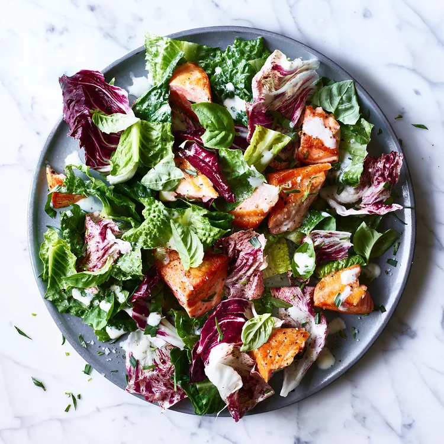

Salmon Ceasar Salad

Description
This easy Caesar salad subs creamy Greek yogurt and buttermilk for the traditional egg yolks and olive oil and mixes in mildly bitter radicchio in addition to classic romaine. Using just a small amount of flavorful Parmigiano-Reggiano shaves calories and sodium too.
Ingredients
- 1 ½ tablespoons extra-virgin olive oil
- 4 (5 ounce) skinless salmon fillets (see Tip)
- 1 teaspoon ground pepper, divided
- ⅛ teaspoon salt plus 1/2 teaspoon, divided
- ½ cup buttermilk
- ¼ cup nonfat plain Greek yogurt
- ¼ cup grated Parmigiano-Reggiano cheese
- 2 tablespoons lemon juice
- 1 ½ teaspoons Worcestershire sauce
- 1 teaspoon grated garlic
- ½ teaspoon Dijon mustard
- 5 cups chopped romaine lettuce
- 3 cups chopped radicchio
- 3 tablespoons thinly sliced fresh basil, plus more for garnish
- 1 ½ tablespoons chopped fresh tarragon
Steps
- Heat oil in a large nonstick skillet over medium-high heat until shimmering.
- Sprinkle salmon with 1/2 teaspoon pepper and 1/8 teaspoon salt.
- Add the salmon to the pan and cook until golden brown and flakes easily with a fork, 3 to 4 minutes per side.
- Transfer to a plate and break into large chunks.
- Whisk buttermilk, yogurt, cheese, lemon juice, Worcestershire, garlic, mustard and the remaining 1/2 teaspoon each pepper and salt in a large bowl until well blended.
- Reserve 1/4 cup of the dressing in a small bowl. Add lettuce, radicchio, basil and tarragon to the large bowl and toss to coat.
- Arrange the salad on a platter and top with the salmon.
- Serve topped with the reserved 1/4 cup dressing and more basil, if desired.
Home Page